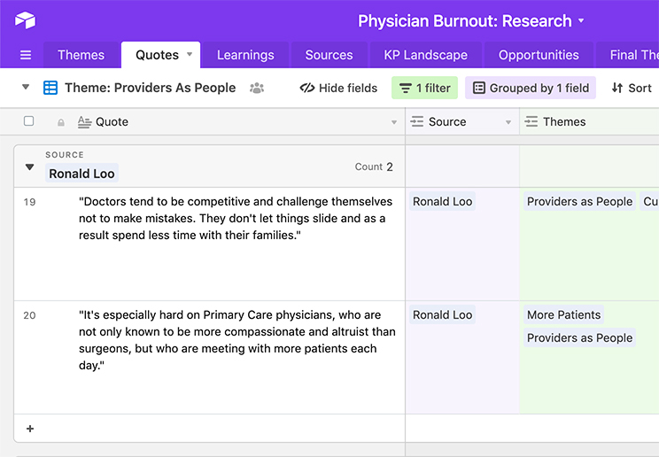

Walking In Their Shoes
Physicians are recorded, tracked, and judged about how they spend every minute during the day. They’re asked to see more people in less time. So they’ve gotten used to spending 2-3 hours at home each night responding to patient emails and finishing charts because they’re still trying to do the right thing.
Family Medicine Physician, Pleasanton
KP Innovation
KP Innovation is a design-driven, user obsessed team that’s wired to ship. We partner with clinicians, patients, family members, and our workforce to develop a new problem-solving mindset focused on identifying the questions first so we can work together to reveal opportunities to solve some of healthcare’s most complex problems.
Our project team consists of five individuals in four regions. This has allowed us to connect with five regions to get a number of cross-regional perspectives in a short period of time. We know any observations, themes, ideas, and opportunities we agree on as a project team have the value of existing in multiple regions. We also have had the opportunity to demonstrate and share our respective skills and learn how to come together as a team, and not just a collection of individuals, across the thousands of miles that separate us physically.
Interviews
Over the course of 6 weeks, we interviewed and shadowed more than 30 physicians in SCAL, NCAL Colorado, KPWA and MAS. We spoke to family medicine doctors, pediatricians, surgical oncologists, longtime KP providers, and some who were relatively new to Kaiser. We placed an emphasis on learning about the experience of primary care physicians, because we heard over and over again that they are ground zero for burnout.
We asked questions like “Tell us about the last time that you had to chart after hours. How did this go and what were you feeling in the moment?” We asked physicians to tell us about their relationship with their care team, how technology helps – or hinders – their resiliency, and what a perfect day looks like to them.
We heard about challenges with redundant technology and systems, the daily struggle to balance efficiency and compassion, and how the experience of practicing medicine has changed rapidly for KP doctors in the past 10 years. We heard a lot of hard truths, and a lot of good ideas.
As the team began populating a share database of quotes, sources, and insights, we started to see some patterns emerge from our disparate but choreographed research. We refined these patterns through conversations with people in and outside of our team, as well as groups of doctors in a workshop setting to see if we were on the right track.
Workshops
We held 3 co-design workshops with 13 providers in SCAL and Colorado. During these workshops we used some new artifacts and tools to help participants tell stories about and share reflections on their daily experience.
We created a wall of quotes from other physicians we’d already spoken to. It not only demonstrated that we had invested significant time in listening to our end users and seeking to understand their challenges, but it also served to let provider participants know that they weren’t alone in the challenges they faced. It was a useful tool for opening up the dialogue about a difficult and personal topic.
We asked providers we spoke with to complete a “Level of Effort” worksheet mapping the ebb and flow of their day in terms of different tasks as well as core drivers like intellectual fulfillment, stress, and joy.
To better understand what physicians meant by “variety in practice, we asked them to map out an “ideal schedule.” This also helped make more tangible what was important to them in terms of interacting with colleagues and efficiently managing desktop medicine responsibilities.
We heard that no matter how efficient a physician might be, time is a challenge for everyone. For self-described “Type A” personalities who are trained to be on time and in control, the unpredictable nature of a schedule peppered with walk-ins and late arrivals is maddening.
We learned that it might not be the volume of work that causes burnout, but the type. Tasks that feel irrelevant or inappropriate, like fixing other people’s charting, inflict more damage.
We were again and again impressed by the level of dedication exhibited by KP physicians, which made us doubly grateful for the time they generously shared with us.
Sustainability Landscape
To call it Wellness... I don't need you to bring me yoga and mindfulness; help me with the office life and that will make me well.
Family Medicine Physician, Pasadena
During our 6 weeks in the field, we developed valuable relationships with not only the physicians on the frontlines of delivering care, but also those above and around them who are working to improve certain inefficiencies on physicians' behalves.
We learned that leaders of both Practice Efficiency and Physician Wellness – roles found at both local and regional levels – have been attempting to address the varying symptoms of Burnout for the past 5 or so years. It's commonly known that when KP first began thinking about Burnout in earnest, they preferred to ask physicians to look "inward" and attempt to heal their own professional frustrations with mindfulness exercises or yoga retreats. We've since categorized the various ways in which KP has or is currently tackling the serious and systemic problem of Burnout.
Based on the positive feedback this framing has received from senior regional leaders in Southern California, we believe there is an opportunity to collaborate with business partners on a foundational reimagining of technology's role in supporting physicians to work at the top of their license.
Below is an overview of some of the Sustainability-related pilots that KP has spun up recently: